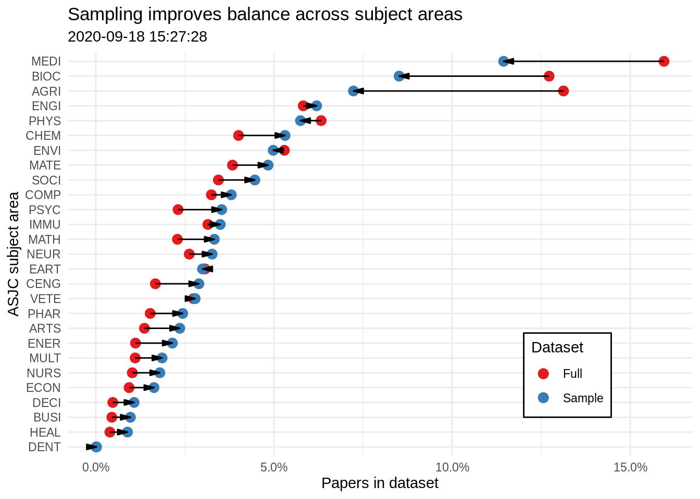
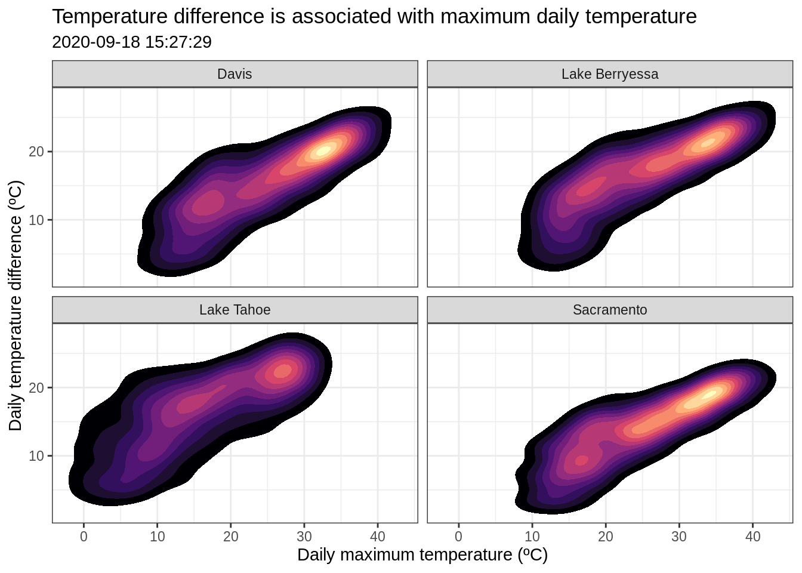
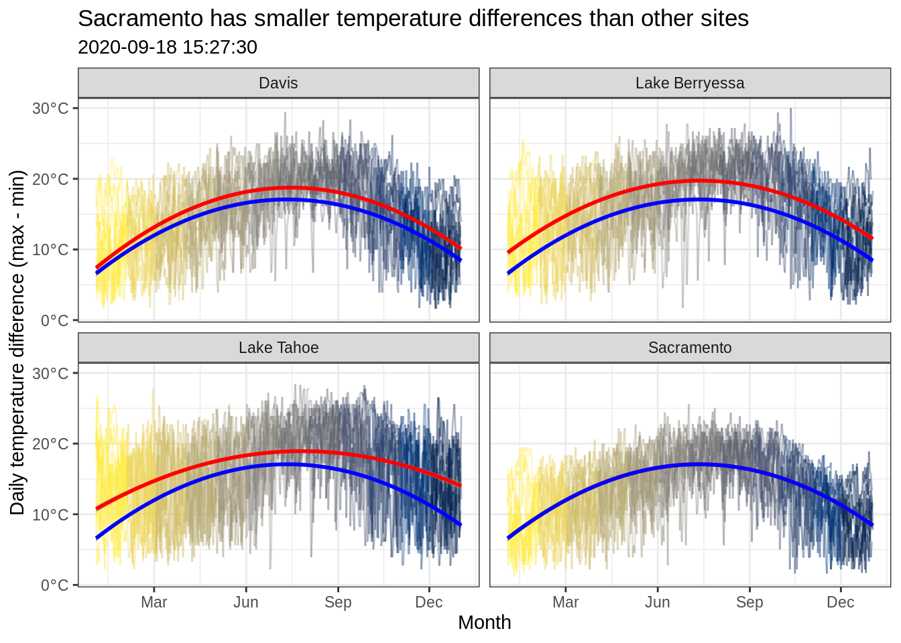

Chapter 11 Intermediate Visualization in R
This chapter is based on a workshop that I ran at UC Davis in February 2019. We won’t be covering it in class. But it gives some more background on visualization in R and presents some more advanced uses of ggplot.
To work through the plots, I recommend commenting out everything and turning off the comments one line at a time. This is the best way to understand how each layer modified the plot.
Some of the plots include alternative layers, mostly geoms, to illustrate how different ways of representing the data provide different visual affordances.
library(ggplot2)
data_dir = 'data'
data_files = c('papers' = 'paper_counts.Rds',
'stations' = 'stations.Rds',
'stations.utm' = 'stations.utm.Rds',
'temperature' = 'temp.Rds')
data_paths = file.path(data_dir, data_files)
names(data_paths) = names(data_files)
data_urls = paste0('https://github.com/dsidavis/RGraphicsWorkshop/raw/master/data/', data_files)
## The repo includes a script `climate_data.R` that creates the final 3 datasets
## `if` isn't vectorized, so we have to loop over this manually
download_file = function(path, url) {
if (!file.exists(path)) {
download.file(url, path)
}
}
purrr::walk2(data_paths, data_urls, download_file)11.1 Base graphics vs. ggplot2
- R comes with a standard set of visualization tools, called base graphics.2
- Base graphics’ approach to visualization is often called an “artist’s palette” model
- A set of low-level tools
points(),lines(),polygon()abline(),curve()
- Define a canvas first, then use these tools to paint elements on the canvas
- A set of low-level tools
- Advantages of base graphics
- One-liners
plot(some_object)often does something useful- Try it with dataframes, regression models, principal components results, hierarchical clusterings, igraph networks, …
hist(),pairs(),barplot(),boxplot(),pie()(!)
- Straightforward to extend to custom classes
- No\(^*\) dependencies; works on any\(^*\) R installation
- Very flexible for unusual visualizations or combinations of plots
- triplots/barycentric coordinates
- scatterplots with marginal densities
- heatmaps with marginal dendrograms
- map with inset plots of local data
- One-liners
- Disadvantages of base graphics
- Parameters aren’t perspicuous
- fill color is
bg(background?) - point shape is
pch(uhhh point-character?) - point size is
cex(???)
- fill color is
- “Ugly defaults”
- Plots as side effects
- Parameters aren’t perspicuous
- Advantages of
ggplot2- Conceptual model
- Facets
- Themes and palettes
- Plots are first-class objects
- “Pretty defaults”
- Disadvantages of
ggplot2- Only\(^*\) for data frames in long format
- Programming with
ggplot2requires understanding tidy evaluation
11.2 Plot 1: Dumbbell plot
- Hicks, Stahmer, and Smith (2018) figure 2
counts_df = readRDS(data_paths['papers'])
counts_df## # A tibble: 27 x 3
## subject_area full sample
## <fct> <dbl> <dbl>
## 1 MEDI 0.159 0.114
## 2 BIOC 0.127 0.0851
## 3 AGRI 0.131 0.0723
## 4 ENGI 0.0582 0.0620
## 5 PHYS 0.0632 0.0574
## 6 CHEM 0.0401 0.0531
## 7 ENVI 0.0529 0.0498
## 8 MATE 0.0384 0.0483
## 9 SOCI 0.0344 0.0446
## 10 COMP 0.0324 0.0380
## # … with 17 more rowsggplot(counts_df, aes(subject_area)) +
## geoms
geom_point(aes(y = full, color = 'Full'), size = 3) +
geom_point(aes(y = sample, color = 'Sample'), size = 3) +
geom_segment(aes(x = subject_area, xend = subject_area,
y = full, yend = sample),
arrow = arrow(angle = 15, type = 'closed',
length = unit(.025, 'snpc'))) +
## scales
xlab('ASJC subject area') +
scale_y_continuous(labels = scales::percent_format(),
name = 'Papers in dataset') +
scale_color_brewer(palette = 'Set1',
name = 'Dataset') +
coord_flip() +
## annotations and theme
ggtitle('Sampling improves balance across subject areas',
subtitle = Sys.time()) +
# annotate(geom = 'label', x = 'HEAL', y = .12, label = Sys.time()) +
theme_minimal() +
theme(legend.position = c(.8, .2),
legend.background = element_rect(fill = 'white'))
# ggsave(paste0(plots_dir, 'plot_1.png'), height = 7, width = 7)11.2.1 Discussion
- What design decisions are being used to highlight the message of this plot?
- What alternative designs could be used to communicate the same message?
- Are any of these alternative designs better than the one I used?
- Try implementing your idea in ggplot
- Are any of these alternative designs better than the one I used?
- How does this plot omit, distort, or mislead?
11.3 Plot 2: High-density scatterplots
## Code to construct this dataset is in `climate_data.R`
temp_df = readRDS(data_paths['temperature'])
## 15k observations lead to lots of overplotting and long render times
str(temp_df)## 'data.frame': 14577 obs. of 12 variables:
## $ id : chr "USC00042294" "USC00042294" "USC00042294" "USC00042294" ...
## $ name : chr "Davis" "Davis" "Davis" "Davis" ...
## $ date : Date, format: "2009-01-01" "2009-01-02" "2009-01-03" ...
## $ year : num 2009 2009 2009 2009 2009 ...
## $ month : chr "January" "January" "January" "January" ...
## $ day : num 1 2 3 4 5 6 7 8 9 10 ...
## $ temp_min : num 3.3 3.9 0.6 -2.8 -2.2 1.7 0 3.9 0.6 -2.8 ...
## $ temp_max : num 6.1 6.7 10.6 11.1 10 7.2 12.8 7.2 10 16.7 ...
## $ temp_delta : num 2.8 2.8 10 13.9 12.2 5.5 12.8 3.3 9.4 19.5 ...
## $ precipitation: num 0 0 0 0 5 8 0 0 0 0 ...
## $ lat : num 38.5 38.5 38.5 38.5 38.5 ...
## $ lon : num -122 -122 -122 -122 -122 ...ggplot(temp_df, aes(temp_max, temp_delta)) +
## geoms
# geom_point() +
# geom_count() +
# geom_bin2d() +
# geom_hex(aes(color = after_stat(count))) +
# geom_density2d(size = 1) +
# stat_density2d(contour = FALSE, geom = 'raster',
# aes(fill = after_stat(density)),
# show.legend = FALSE) +
stat_density2d(geom = 'polygon',
aes(fill = after_stat(level)),
show.legend = FALSE) +
## facets
facet_wrap(~ name) +
## Annotations are repeated within each facet
# annotate(geom = 'label', x = 200, y = 5, label = Sys.time()) +
## scales
xlab('Daily maximum temperature (ºC)') +
ylab('Daily temperature difference (ºC)') +
scale_color_viridis_c(option = 'A') +
scale_fill_viridis_c(option = 'A') +
## themes
theme_bw() +
ggtitle('Temperature difference is associated with maximum daily temperature',
subtitle = Sys.time())## Warning: Removed 104 rows containing non-finite values (stat_density2d).
# ggsave(paste0(plots_dir, 'plot_2.png'), height = 7, width = 7)11.3.1 Discussion
- What are the strengths and weaknesses of each different option?
11.4 Plot 3: Time series + model predictions
## Hack to get month labels on day-as-year
## <https://stackoverflow.com/a/39861306/3187973>
temp_df$day.date = as.Date(temp_df$day, '2009-01-01')
## Model **for Sacramento alone**
model = lm(data = temp_df, temp_delta ~ day + I(day^2),
subset = name == 'Sacramento')
## The director of the center where I gave this talk (who was also my postdoc supervisor) is part of the R Core Team. He doesn't like tidyverse, so I did everything except ggplot using base R.
## This is a good illustration of how tidyverse makes R more functional
predictions = predict(model, interval = 'confidence', level = .95)
predictions = as.data.frame(predictions)
predictions$day = model$model$day
predictions$day.date = as.Date(predictions$day, '2009-01-01')
ggplot(temp_df, aes(day.date, temp_delta)) +
## geoms
geom_path(aes(color = month, group = year), alpha = .3, show.legend = FALSE) +
## Separate models for each panel
geom_smooth(method = lm, formula = y ~ x + I(x^2),
color = 'red', size = 1) +
## Sacramento-only model
## Use the smooth geom to get curve + ribbon
## But set `stat = 'identity'` because we don't want to fit a (new) model
geom_smooth(data = predictions, stat = 'identity',
aes(y = fit, ymax = upr, ymin = lwr),
color = 'blue', fill = 'blue', size = 1) +
## facets
facet_wrap(~ name) +
## scales
scale_x_date(name = 'Month', date_breaks = '3 month', date_labels = '%b') +
scale_y_continuous(name = 'Daily temperature difference (max - min)',
labels = scales::math_format(expr = .x*degree*C)) +
scale_color_viridis_d(limits = month.name,
option = 'E',
direction = -1) +
# coord_polar() +
## themes
theme_bw() +
ggtitle('Sacramento has smaller temperature differences than other sites',
subtitle = Sys.time())## Warning: Removed 104 rows containing non-finite values (stat_smooth).## Warning: Removed 1 row(s) containing missing values (geom_path).
## Note effect of aspect ratios on perception
# ggsave(paste0(plots_dir, 'plot_3.png'), height = 7, width = 7)
# ggsave(paste0(plots_dir, 'plot_3a.png'), height = 7, width = 12)11.4.1 Discussion
- What are the dangers of using models internal to the plot?
- Aspect ratios change our perception of the plot. Does this mean one aspect ratio is misleading?
11.5 Plot 4: Visualizing spatial data in R
- I don’t recommend visualizing spatial data until you’ve learned a bit about coordinate systems and projections
- Definitely don’t try to do math on spatial coordinates unless you know what you’re doing!
- The
sfpackage for working with spatial data has a ton of dependencies, so I’m going to disable all of the code blocks below.- They’re here for you to explore on your own if interested.
- This code has not been checked for errors.
- They’re here for you to explore on your own if interested.
- As of version 3,
ggplot2can plot vector spatial data fromsfobjects usinggeom_sf() - This section looks at two different ways of adding basemaps under
geom_sf()plots
if (packageVersion('ggplot2') < package_version('3.0.0')) {
stop('ggplot2 version 3 or later is required for this section')
} else {
library(sf)
library(ggmap)
library(ggspatial)
}
stations = readRDS(data_files['stations'])
stations.utm = readRDS(data_files['stations.utm'])
stations11.5.1 ggmap approach
- Services other than Google Maps are deprecated
- Requires Google account, API key
- Doesn’t seem to play nicely with coordinates other than lat/lon
- See
?register_googlefor links and instructions - DO NOT SHARE YOUR API KEY
# register_google(key = 'notarealkey', write = TRUE)
if (!has_google_key()) {
stop('You need a Google Maps API key. See ?register_google')
}
basemap = get_map(location = c(-121.4183, 38.5552),
maptype = 'terrain',
zoom = 8)
ggmap(basemap) +
geom_sf(data = stations, inherit.aes = FALSE) +
geom_sf_label(data = stations,
aes(label = name), nudge_y = -.1, size = 3)
# ggsave(paste0(plots_dir, 'plot_4_ggmap.png'), height = 7, width = 7)
## Example with UTM coordinates
# ggmap(basemap) +
# geom_sf(data = stations.utm, inherit.aes = FALSE)11.5.2 ggspatial approach
annotation_map_tile()is slow, even with cached images- See
rosm::osm.types()for a list of basemap types
ggplot(data = stations) +
annotation_map_tile(type = 'osm', zoom = 10) +
geom_sf_label(data = stations,
aes(label = name), nudge_y = .03, size = 3) +
geom_sf() +
annotation_scale(location = 'tl') +
annotation_north_arrow(location = 'br', which_north = 'true',
style = north_arrow_minimal)
# ggsave(paste0(plots_dir, 'plot_4_ggspatial.png'), height = 7, width = 7)
## Example with UTM coordinates
# ggplot(data = stations.utm) +
# annotation_map_tile(type = 'osm', zoom = 10,
# cachedir = system.file('rosm.cache', package = 'ggspatial')) +
# geom_sf_label(data = stations,
# aes(label = name), nudge_y = 1000, size = 3) +
# geom_sf()